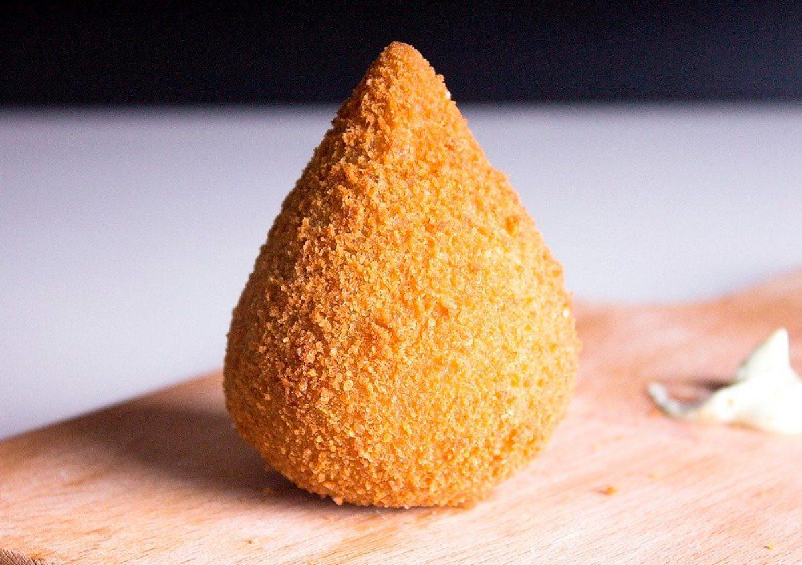

Coxinha Prática Deliciosa

Descrição:
A coxinha é um salgadinho brasileiro, de origem paulista, também comum em Portugal, feito com massa de farinha de trigo e caldo de galinha, que envolve um recheio elaborado com carne temperada de frango, queijo, calabresa ou vários outros tipos de sabores.
Feita com massa de batata, a coxinha é tradicionalmente recheada com carne de frango cozida e desfiada, podendo ter a opção de também ser recheada com requeijão cremoso, tal qual o catupiri, junto ao frango. Modelada em forma de gota, para lembrar a coxa de galinha, a coxinha é enfarinhada com farinha de rosca e frita em óleo quente.
A coxinha de frango é servida em lanchonetes, casas de café, lojas especializadas em salgadinhos, padarias e pastelarias. Em formatos pequenos, são servidas em festas e buffets. Atualmente existem à venda, em supermercados e padarias, diversas marcas de coxinhas semiprontas congeladas.
Ingredientes:
- 1 xícara (chá) de água
- 1 colher (sopa) de manteiga
- farinha de rosca
- 2 ovos batidos
- 1/2 xícara (chá) de batata cozida e amassada
- 1 e 1/2 kg de frango
- 2 dentes de alho
- 2 colheres (sopa) de azeite
Modo de Preparo:
- Em uma panela, coloque o azeite, o alho picado e a cebola.
- Espere fritar e adicione o frango desfiado e os temperos de sua preferência.
- Refogue tudo por 5 minutos, retire do fogo, acrescente o requeijão, misture e reserve.
- Em uma panela grande, adicione a água, o leite, o tablete de caldo, a batata, a manteiga e deixe ferver. Acrescente a farinha de trigo de uma só vez, mexendo até soltar do fundo da panela.
- Despeje a massa sobre uma superfície lisa e untada, sove bem e deixe esfriar.
- Passe a massa modelada pelo ovo batido e pela farinha de rosca.
- Frite em óleo quente até dourar e escorra sobre papel absorvente.